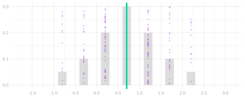
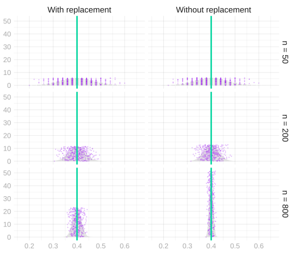
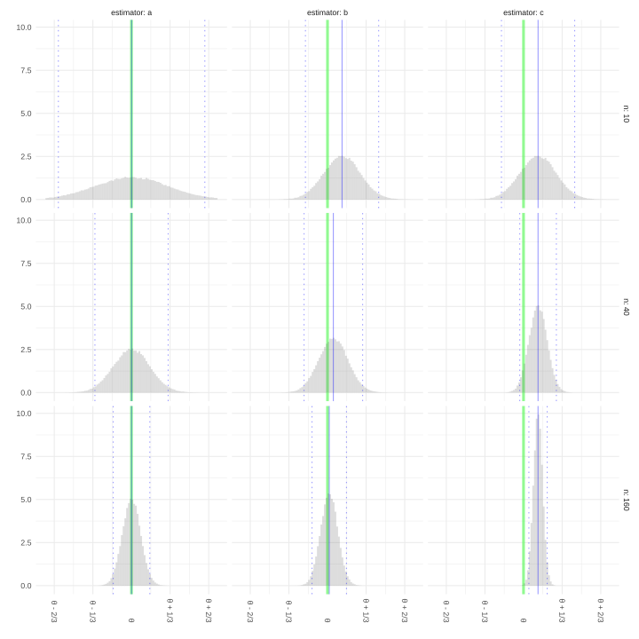

17 Homework — Random Variables, Moments, and the Standard Deviation
$$ \newcommand{X}{} \newcommand{Y}{} % A hex digit after # inside a macro body is eaten by build-time expansion, so digit-leading hexes spell # via .
$$
Reminder: put each answer in its answer block. Working on paper is fine—photograph it and include it with  (image in the same folder as this file).
\newcommand{\thetaprior}{\theta^{\text{prior}}} \newcommand{\nprior}{n^{\text{prior}}} \newcommand{\yprior}{y^{\text{prior}}}
The Rules
We’ve been using the rules of probability and expectation all semester without ever writing them down. Here they are, against something we actually did: the two calls to the population 0,0,0,1 from the chapter. Each row is a call sequence, colored by the pair of responses (Y_1, Y_2) it produces: purple for (0,0), pink for (1,0), blue for (0,1), and green for (1,1).
| J1 | J2 | Y1 | Y2 | With replacement | Without replacement |
|---|---|---|---|---|---|
| 1 | 1 | 0 | 0 | 1/16 | 0 |
| 1 | 2 | 0 | 0 | 1/16 | 1/12 |
| 1 | 3 | 0 | 0 | 1/16 | 1/12 |
| 2 | 1 | 0 | 0 | 1/16 | 1/12 |
| 2 | 2 | 0 | 0 | 1/16 | 0 |
| 2 | 3 | 0 | 0 | 1/16 | 1/12 |
| 3 | 1 | 0 | 0 | 1/16 | 1/12 |
| 3 | 2 | 0 | 0 | 1/16 | 1/12 |
| 3 | 3 | 0 | 0 | 1/16 | 0 |
| 1 | 4 | 0 | 1 | 1/16 | 1/12 |
| 2 | 4 | 0 | 1 | 1/16 | 1/12 |
| 3 | 4 | 0 | 1 | 1/16 | 1/12 |
| 4 | 1 | 1 | 0 | 1/16 | 1/12 |
| 4 | 2 | 1 | 0 | 1/16 | 1/12 |
| 4 | 3 | 1 | 0 | 1/16 | 1/12 |
| 4 | 4 | 1 | 1 | 1/16 | 0 |
Probabilities. The rules are these.
- Nothing has negative probability.
- If you want to know the probability that one of two outcomes happens, add their probabilities.
In notation, \begin{aligned} &P(X=x) \ge 0, \\ &P(X=x \text{ or } X=x') = P(X=x) + P(X=x') \quad\text{ if }\quad x \ne x'. \end{aligned}
What’s the x \ne x' thing about? Well, in the case that x = x', if we said the probability that X=1 or X=1, that’s just the probability that X=1. So that can’t be two times the probability that X=1. That’s obvious in this case. But sometimes people can get a little confused when they talk in more general terms. For example, they might talk about the probability that the total Y_1+Y_2 is at least one. Their way of thinking about that would be that it happens if Y_1=1 or if Y_2=1, and then they would go to sum those two probabilities. But when you think about it in terms of the table, what they’re doing is summing the pink and green rows and then adding it to the sum of the blue and green rows. They’re counting the green rows twice. That’s making the same mistake: P(Y_1+Y_2 \ge 1) \ne P(Y_1=1) + P(Y_2=1).
More generally, if you want to know whether anything in two sets of outcomes happens, you can add their probabilities if the sets are not overlapping. In the table, that says we can add the probabilities of the blue rows and the purple rows to get the probability of a blue or purple row. What we can’t do is double count rows. And that can happen if you’re not careful.
So you can take any sets of outcomes and get the probability that one or the other of them is true, if those sets are not overlapping. The usual math terminology for nonoverlapping is disjoint, and we call this property of probabilities disjoint additivity.
Expectations
The expectation of X is its probability-weighted average, \operatorname{E}[X]=\sum_x xP(X=x). In the table, you’d get it by multiplying each row’s value of X by that row’s probability and adding them up.
Linearity says the expectation of a sum is the sum of the expectations, and constants come out in front: \operatorname{E}[aY+bZ] = a\operatorname{E}[Y]+b\operatorname{E}[Z]. In the table, you could add a total column, the first-response column plus the second, and its expectation would be the two expectations added. This is true whether or not Y and Z are independent.
Two things to remember.
- Adding a constant to a random variable moves its mean by that constant and leaves its spread alone.
- Multiplying by a constant a multiplies the mean by a, the standard deviation by |a|, and the variance by a^2.
Indicators. An indicator is one when something happens and zero when it doesn’t. We used them in class to turn a probability into an expectation. We’ll use one for each color in the table: 1_{\textcolor{#7756a8}{P}} is one in the purple rows, where both responses are zero; 1_{\textcolor{#06D6A0}{G}} in the green rows, where both are one; 1_{\textcolor{#EF476F}{R}} in the pink rows, where the first is one and the second zero; and 1_{\textcolor{#118AB2}{B}} in the blue rows, where the second is one and the first zero. An indicator only takes the values zero and one, so its probability-weighted average is the probability of its rows: \operatorname{E}[1_{\textcolor{#7756a8}{P}}] = 0\cdot P(\text{not purple}) + 1\cdot P(\text{purple}) = P(Y_1=0 \text{ and } Y_2=0), 9/16 with replacement and 1/2 without.
Variances
The variance of X is the probability-weighted average of its squared distance from its mean, and the standard deviation is its square root. Write Z=X-\operatorname{E}[X] for the centered version of X, so that \operatorname{V}(X)=\operatorname{E}[Z^2]. In the table, you’d get it by subtracting the mean from each row’s value of X, squaring, and averaging those with the row probabilities. Shifts and scales are covered by the two things to remember above.
Independence. Two random variables are independent when their joint probabilities are the products of their separate ones, P(Y_1=y_1 \text{ and } Y_2=y_2) = P(Y_1=y_1)P(Y_2=y_2). The two probability columns of the table differ on exactly this. Each response on its own is one with probability 1/4 under either scheme. With replacement, the purple rows have probability 9/16 = \frac34 \cdot \frac34, and every other color works out the same way: each joint probability is the product of the two marginal ones. Without replacement they are not. The purple rows have probability 1/2 rather than 9/16, and the green row is impossible rather than 1/16, because a call that reaches our one person rules that person out for the second call.
Products. The expectation of a product is the product of the expectations, and the same holds for functions of them: \operatorname{E}[f(Y_1)g(Y_2)] = \operatorname{E}[f(Y_1)]\operatorname{E}[g(Y_2)] \quad\text{ if }\quad Y_1 \text{ and } Y_2 \text{ are independent}. We use it on the centered responses Z_i=Y_i-\operatorname{E}[Y_i]. Those have mean zero, so the expectation of their product is \operatorname{E}[Z_1Z_2] = \operatorname{E}[Z_1]\operatorname{E}[Z_2] = 0 \times 0 \quad\text{ if }\quad Y_1 \text{ and } Y_2 \text{ are independent}. Without replacement that product has expectation -1/16 instead.
Variances of sums. Squaring a sum of two things leaves two squares and two products, so \operatorname{V}(Y_1+Y_2) = \operatorname{E}[(Z_1+Z_2)^2] = \operatorname{E}[Z_1^2] + \operatorname{E}[Z_1Z_2] + \operatorname{E}[Z_2Z_1] + \operatorname{E}[Z_2^2]. Linearity takes us this far under either sampling scheme. The two squares are the two variances. What is left are the two cross terms, and when the responses are independent those are \operatorname{E}[Z_1]\operatorname{E}[Z_2] = 0 \times 0, which leaves \operatorname{V}(Y_1+Y_2) = \operatorname{V}(Y_1) + \operatorname{V}(Y_2) \quad\text{ if }\quad Y_1 \text{ and } Y_2 \text{ are independent}. Variances add when the things being added are independent. And that’s why. In the table that is 3/16+3/16=3/8 with replacement. Without replacement each cross term is -1/16, and the variance of the total is 1/4, which is smaller.
Variance when Sampling with Replacement
Sampling Without Replacement
When we talked about the hypergeometric distribution, we got the distribution of a pair of responses when we sample without replacement from a binary population of any size. In Means and Markov’s Inequality we did the special case of a population of size four. For a binary population y_1 \ldots y_m with m_0 zeros and m_1 ones, m>1, these are the distributions of one response and of a pair.
| p | Y_1 |
|---|---|
| \frac{m_0}{m} | 0 |
| \frac{m_1}{m} | 1 |
| p | Y_1 | Y_2 | |
|---|---|---|---|
| \frac{m_0(m_0-1)}{m(m-1)} | 0 | 0 | |
| \frac{m_0m_1}{m(m-1)} | 0 | 1 | |
| \frac{m_0m_1}{m(m-1)} | 1 | 0 | |
| \frac{m_1(m_1-1)}{m(m-1)} | 1 | 1 |
You can go ahead and cross out the Y_1 in the first table and write in Y_i, because this is the marginal distribution of every individual observation Y_i when we draw a sample without replacement of any size n. You can cross out Y_1 and Y_2 in the second table and write in Y_i and Y_j for the same reason: it’s the joint distribution of any pair (Y_i, Y_j) for i\neq j when we draw a sample without replacement of any size n. This makes them a lot more useful.
To justify this, we can do a simple two-step thought experiment. We’ll think of drawing a sample without replacement as the process of shuffling a deck of cards labeled 1 … m, then drawing the first n cards off the top. Letting J_1 be what the first card says, J_2 what the second one says, and so on, our sample Y_1 \ldots Y_n is y_{J_1} \ldots y_{J_n}. Here’s our argument.
No matter how many cards we’re going to draw, the distribution of the first card is the same. Same with the first two cards. Thus, what we’ve written above is the marginal distribution of Y_1 and the joint distribution of (Y_1,Y_2) when we make any number of calls n.
If we’d pulled off the first n cards and then counted from the bottom instead of the top, we’d get the same distribution. They’re shuffled, after all. So the marginal distributions of Y_1 and Y_n are the same and so are the joint distributions of (Y_1,Y_2) and (Y_n,Y_{n-1}). The same thing would be true if we went through our top n cards in any order. Thus, the marginal distributions of Y_i are the same for all i and the joint distributions of (Y_i,Y_j) are the same for all i \neq j.
We’ve left a column open in the second table for you to use if you’d like. The population mean is \theta=m_1/m, and the centered response is Z_i = Y_i - \theta = \begin{cases} -\theta & \text{if } Y_i = 0, \\ 1-\theta & \text{if } Y_i = 1. \end{cases}
Now let’s use this to calculate the variance of our sample proportion \hat\theta=\frac{1}{n}\sum_{i=1}^{n}Y_i. In the chapter, we squared out \frac1n\sum_i Z_i and took expectations. That left two kinds of term. The squares, \operatorname{E}[Z_i^2]=\theta(1-\theta), the same for every call. And the cross terms, \operatorname{E}[Z_iZ_j] for i \ne j. With replacement, the cross terms are zero. Without replacement, they aren’t. We get them from the table above.
Do either version of The Cross Term below.
The Easy Way
Let’s start by rewriting this expression so it’s a little easier to work with. Like this.
\operatorname{E}[Z_iZ_j] = \operatorname{E}\left[ (Y_i - \operatorname{E}[Y_i])(Y_j - \operatorname{E}[Y_j]) \right] = \operatorname{E}[Y_i Y_j] - \operatorname{E}[Y_i]\operatorname{E}[Y_j]
What’s nice about this second form is that using our tables above to calculate these expectations is easy. We actually have a column for Y_i in our marginal table and can use the blank column in our joint table for Y_i Y_j. I’d like to ask you to calculate the thing, but since it’d probably take a little arithmetic to manipulate what you get into the form -\frac{\theta(1-\theta)}{m-1} we need, I’m going to ask you to verify my calculation instead.
Simplifying this into the form -\frac{\theta(1-\theta)}{m-1} is a little bit of work. As usual, the trick is to give your two terms a common denominator and see what cancels.
I’ll save you the trouble, but I’ll ‘fold’ it like I usually do solutions, so if you’d like to try it on your own, you can without the solution staring you in the face. If you do just want to read it, expand the box by clicking on it.
The Hard Way
Alternatively, we can calculate the same cross term directly: multiply the centered responses, then average using the probabilities in the table.
Simplifying this into the form -\frac{\theta(1-\theta)}{m-1} is a little bit of work. The trick is to write everything in terms of m_0 and m_1 and see what cancels. I’ll save you the trouble, but I’ll fold it like I usually do solutions, so if you’d like to try it on your own, you can without the solution staring you in the face.
Visualizing the Result
Here are the sampling distributions of the sample mean with and without replacement from the same population, 400 ones and 600 zeros, at sample sizes 50, 200, and 800. Same center; the without-replacement one is narrower. That is the cross term at work.

Approximate Calibration
We’ll try the variance formula out on the NBA data we’ve been working with recently.
sam = read.csv("data/nba_sample_1.csv")
pop = read.csv("data/nba_population.csv")
indicator = function(W,L,...) { W / (W+L) > 1/2 }
Y = indicator(sam$W, sam$L)
y = indicator(pop$W, pop$L)
n = length(Y)
m = length(y)
theta = mean(y)The sample Y_1 \ldots Y_{100} we’ll use is drawn without replacement from a population y_1 \ldots y_{539} of indicators. These indicators—one for each of the 539 players who played in the NBA in 2023—are one if the player’s team won more than half the games they played in and zero otherwise. Our estimator is the sample mean, \hat\theta=\bar Y.
We’re going to ask you to implement an interval estimator based on Chebyshev’s inequality and compare it to two others.
Support Code
All you have to do in this section is run this block. You don’t have to look at it. We’ve explained it in case you’re curious.
width = function(draws, center = mean(draws), alpha = .05) {
2 * quantile(abs(draws - center), 1 - alpha, type = 1)
}
binary_search = function(f, target, limits, steps = 50) {
for(i in 1:steps) {
middle = mean(limits)
if(f(middle) < target) limits[1] = middle else limits[2] = middle
}
limits[2]
}
width_hyper = function(theta, n, m, alpha = .05) {
if(theta == 0 || theta == 1) { return(0) }
coverage = function(w) {
phyper(floor(n*(theta+w/2)), m*theta, m*(1-theta), n) -
phyper(ceiling(n*(theta-w/2))-1, m*theta, m*(1-theta), n)
}
binary_search(coverage, 1-alpha, c(0, 2*max(theta, 1-theta)))
}
coverage_probability = function(interval, n) {
rep(list(y), 1000) |>
map(\(y) sample(y, n)) |>
map(interval) |>
map_vec(\(estimate) estimate[1] <= theta & theta <= estimate[2]) |>
mean() |>
with_seed()
}
average_width = function(interval, n) {
rep(list(y), 1000) |>
map(\(y) sample(y, n)) |>
map(interval) |>
map_vec(diff) |>
mean() |>
with_seed()
}
show_intervals = function(intervals, n, estimator = mean, samples = 10) {
estimator_samples = rep(list(y), 10000) |>
map(\(y) sample(y, n)) |> map_vec(estimator) |> with_seed()
estimates = rep(list(y), samples) |>
map(\(y) sample(y, n)) |>
map(\(Y) data.frame(method = names(intervals),
center = estimator(Y),
lower = map_vec(intervals, \(interval) interval(Y)[1]),
upper = map_vec(intervals, \(interval) interval(Y)[2]))) |>
bind_rows(.id = "sample") |>
mutate(height = max(table(estimator_samples) / length(estimator_samples)) *
(as.integer(sample) + .15 * (as.integer(factor(method, levels = names(intervals))) - 1)) / (samples + 1)) |>
with_seed()
ggplot() +
geom_bar(aes(x = estimator_samples, y = after_stat(prop)), alpha = .3,
width = min(diff(sort(unique(estimator_samples))))) +
with_annotations(estimator_samples, estimand = theta, dots = 0) +
geom_pointrange(aes(x = center, xmin = lower, xmax = upper, y = height, color = method),
linewidth = default.dot.size/4, size = default.dot.size/4, data = estimates) +
scale_color_manual(values = c("orange", "darkcyan", "black") |> setNames(names(intervals))) +
coord_cartesian(xlim = range(c(estimates$lower, estimates$upper, estimator_samples))) +
theme(legend.position = "bottom") +
labs(x = "Estimate", y = "Sampling distribution", color = "Interval estimate")
}- 1
-
The middle-95% width of a set of draws around a center, the same
widthwe used in Homework 2. - 2
- The width of the middle 95% of the hypergeometric sampling distribution of the sample mean, found by searching for the width whose coverage is 95%.
- 3
-
The fraction of 1000 samples of size n from the population whose interval estimate covers \theta.
intervalis an interval estimator. - 4
- The average width of those 1000 interval estimates.
- 5
-
The estimator’s sampling distribution in gray, \theta as a green line, and for each of 10 samples from the population the interval estimate from each interval estimator in
intervals, stacked together and colored by name.intervalsis a named list of interval estimators.
Using Prior Information
So far, we’ve exclusively talked about unbiased estimators. That is, estimators with the property that their expected value is equal to the estimation target. \hat\theta \quad\text{ is called unbiased if }\quad \operatorname{E}[\hat{\theta}] = \theta. We say an estimator is biased if this isn’t true. To get a sense of what that means, let’s consider a simple example of a biased estimator. \tilde{Y}_1 = \frac{1}{n+1}\left(\frac{1}{2} + \sum_{i=1}^{n}Y_i\right)
This is a specific example of a more general estimator that integrates information from a prior study. Maybe a real study or maybe a study we’re imagining. Suppose we have n^{\text{prior}} observations y^{\text{prior}}_1 \ldots y^{\text{prior}}_{n^{\text{prior}}} from this study1 \theta^{\text{prior}} = \frac{1}{n^{\text{prior}}}\sum_{i=1}^{n^{\text{prior}}}y^{\text{prior}}_i.
Then averaging all our observations — from our current study and this prior one — gives us the following estimator.
\begin{aligned} \tilde{Y}_{n^{\text{prior}}} &= \frac{1}{n^{\text{prior}} + n} \left(\sum_{i=1}^{n^{\text{prior}}}y^{\text{prior}}_i + \sum_{i=1}^{n} Y_i\right) \\ &= \frac{1}{n^{\text{prior}} + n} \left( n^{\text{prior}}\theta^{\text{prior}} + n\bar Y \right) \end{aligned}
We treat these prior observations, and therefore their mean \theta^{\text{prior}}, as deterministic. The simple example we started with, \tilde{Y}_1, is a special case where we have a single prior observation y^{\text{prior}}_1 = \frac{1}{2}.
Visualizing the Impact of Prior Information
Let’s try to get a sense of how using prior information like this impacts our inference. We’ll do it visually. The plot below shows the sampling distributions of three estimators of a population mean \theta at three sample sizes n: 10, 40, and 160. These are the estimators.
- The estimator \hat\theta_1 = \tilde{Y}_{n^{\text{prior}}} for \theta^{\text{prior}}=3/4 and n^{\text{prior}}=10 prior observations.
- The estimator \hat\theta_2 = \tilde{Y}_{n} for \theta^{\text{prior}}=3/4 and n^{\text{prior}}=n prior observations. The bigger the sample, the more prior observations we use.
- The sample mean, \hat\theta_3 = \bar Y.
As usual, the estimation target \theta is indicated by a green line, the sampling distribution’s mean by a solid blue line, and its mean plus and minus two standard deviations by dotted blue lines. In this exercise, we’ll match estimators to pictures.

We’re going to ask you to implement a Chebyshev interval estimator again, this time centered at \tilde Y_{100}, the estimator \tilde Y_{n^{\text{prior}}} from Exercise 21.2 with a second sample of n^{\text{prior}}=100 players as the prior observations, and compare it to a bootstrap one.
Extra Credit: Bias and Coverage
When we calculated coverage in the last exercise, the intervals that missed were the ones centered too far to the right to reach down to the population mean. Chebyshev’s inequality tells us how often an estimator lands far from its own mean. But a biased estimator’s own mean isn’t the population mean. So let’s work out how much coverage we can still count on when the two are some distance apart. We’ll do the same calculation with the normal approximation in class later this week.
Sometimes we call these pseudo-observations. This particular interpretation, in which we think of them as coming from a prior study, can be used to derive this estimator from Bayesian principles.↩︎